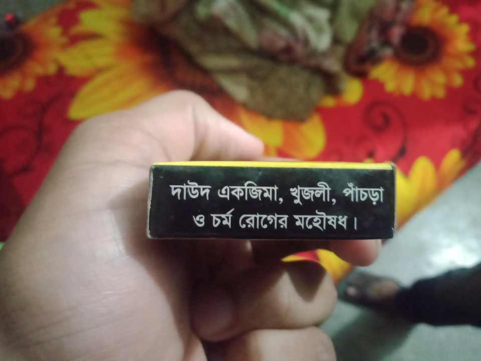

A science student can apply any groups of subject to admit. Here the groups and subject name are
Now I discuss those subject that which is the best for your career.
Mathematics
If you are a student of science group. There are many subject for you that I already told at first. But If you get admit in the subject of Mathematics it will be a great impact in your future life. Because Mathematics is the father of science. Mathematics is implement in physics, chemistry. Without mathematics those subject was useless. In our everyday life we use mathematics in different ways. In our electronics device it apply for it program using mathematics equation. Mathematics is the language of Science. Studying mathematics to improves your problem-solving and logical thinking.Physics
If you admitted in physics it also be a good subject. But without math physics can not do anything.Physics tells us why the sky is blue, how rainbows form, why things fall to the ground, and how the planets move. It helps us understand the laws of nature.In short, physics helps us understand, build, and improve the world.Chemistry
If you are admitted in chemistry its also a better option for you. Chemistry is important because it helps us understand what everything is made of and how substances change. Chemistry is used to make medicines, vaccines, and even soaps and sanitizers. Doctors and pharmacists use chemistry to help people stay healthy. Cooking is full of chemistry—how food changes when it's heated, how preservatives work, and why food spoils.Botany And Zoology
If you are admitted botany and zoology ...! . I don't know how can I explain this. Because science means create an objects but botany and zoology means just create name those thing that is already created. So, its does not suits the main purpose of Science.. Mathematics builds logical thinking, problem-solving ability, and decision-making skills. It trains your brain to think clearly and solve real-life problems, unlike botany or zoology which focus mostly on memorization and observation. Math is the base of physics, computer science, AI, engineering, and even economics. If you want to work with cutting-edge technologies or innovation, math is essential. Botany and zoology are more limited to biology and nature-related fields. zoology and botany are both important. Zoology and botany are important because they teach us about animals and plants, but mathematics is even more important because it helps us think clearly and is used in almost every subject. In short, Math opens more doors, builds stronger thinking skills, and connects to more fields than botany or zoology. zayed, how can you do it to choose this subject. you choose this subject just for huuur poori and its the main fact that you usually don't miss your any classes. when Mahi is always behind with you, so why do you need huur poori..please tell me ..?Last of all I say for whole student, who read in science group and confused which subject do you need, so I told those student to choose a subject that meets main purpose of science.
Now I show to Everyone as a demo, how a zoology student do in his life
just look like as a murad who engaged mahi with a bad thing
when he sleep, look like a female sleep with her wourna
Its very useful product of a zoology student. Without it they would be died in a few days
